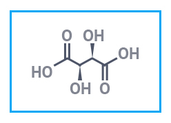
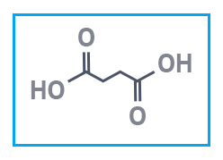
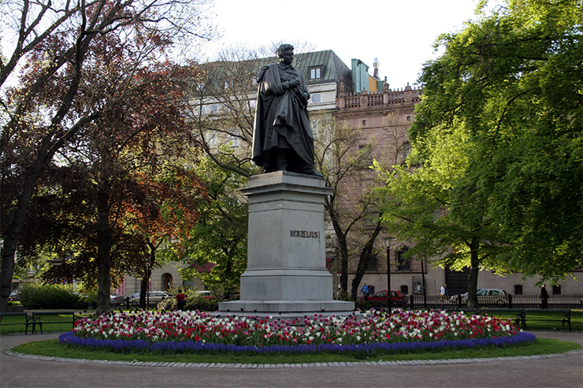

Йёнс Якоб Берцелиус (швед. Jöns Jakob Berzelius, friherre Berzelius; 20 августа 1779 — 7 августа 1848) — шведский химик и минералог. Барон (с 1835). Ввёл современные символы химических элементов. Открыл церий (1803), селен (1817) и торий (1828). Развил электрохимическую теорию. Предложил термины аллотропия, изомерия, катализ и другие. Член Шведской академии наук, с 1810 года — её президент, с 1818 года — непременный секретарь. Член Германской академии естествоиспытателей «Леопольдина» (1818), иностранный член Лондонского королевского общества (1813), почётный член Петербургской академии наук (1820), иностранный член Парижской академии наук (1822).В браке с:Элизабет Берцелиус
Родители: Самуэль Берцелиус
Дата
Родился: 20 августа 1779 г., Линчёпинг, Швеция
Умер: 7 августа 1848 г. (68 лет), Стокгольм, Швеция
Цитата
1
Поскольку минералогия составляет часть химии, ясно, что это расположение [минералов] должно выводить свои принципы из химии. Самым совершенным способом расположения, несомненно, было бы позволить телам следовать друг за другом в соответствии с порядком их электрохимических свойств, от наиболее электроотрицательного, кислорода, до наиболее электроположительного, калия; и расположить каждое составное тело в соответствии с его наиболее электроположительным ингредиентом.
2
Опыты, проведенные над взаимными электрическими отношениями тел, научили нас тому, что их можно разделить на два класса: электроположительные и электроотрицательные. Простые тела, принадлежащие к первому классу, а также их оксиды всегда поглощают положительное электричество, когда встречаются с простыми телами или оксидами, принадлежащими ко второму классу; а оксиды первого класса всегда ведут себя с оксидами другого как солеобразующие основания с кислотами.
3
При расположении тел в порядке их электрической природы образуется электрохимическая система, которая, по моему мнению, более чем любая другая подходит для того, чтобы дать представление о химии.
4
Бог знает, что происходит с вашим временем, когда вы начинаете стареть. Ты все время занят, делаешь важные дела, работаешь, а в сумме получается ничего.
5
Так как для конкретных идей необходимо иметь определенные и, следовательно, по возможности избранные термины, я предложил называть вещества сходного состава и различных свойств изомерными, от греческого ???????? (состоит из равных частей).
6
Привычка к мнению часто приводит к полному убеждению в его истинности, скрывает его слабые стороны и делает нас неспособными принять доказательства против него.
7
Эта новая сила, до сих пор неизвестная, является общей для органической и неорганической природы. Я не думаю, что это сила, полностью независимая от электрохимического сродства материи; Я считаю, наоборот, что это только новое проявление, но так как мы не можем видеть их связи и взаимозависимости, то проще будет обозначить его отдельным именем. Я буду называть эту силу каталитической силой. Точно так же я буду называть разложение тел под действием этой силы катализом, как называют разложение тел химическим анализом сродства.
Информационная справка
Йёнс Якоб Берцелиус — один из самых известных Йёнс Якоб Берцелиус химиков в мире. Трудно переоценить его вклад в развитие науки: он ввел в употребление современную химическую символику, обнаружил несколько новых элементов, уточнил атомные веса известных элементов, определил процентный состав более чем двух тысяч соединений. Именно он предложил такие понятия, как «органическая химия», «катализ», «изомерия», «аллотропия». Много занимался теорией электрохимии, ввел новые способы исследований для аналитической химии, усовершенствовал химические приборы. По его учебникам учились многие поколения химиков из разных стран.
Йенс Якоб Берцелиус, один из основоположников современной химии. Он особенно известен своим определением атомных весов, разработкой современных...
Интересные факты
Четырнадцати лет его отдали в гимназию, но вскоре ему пришлось начать самому зарабатывать на жизнь и учебу. В 1797 г. он поступил на медицинский факультет Упсальского университета. Жизнь не баловала юношу: днем занятия в университете, по вечерам тяжелая работа, чтобы обеспечить более чем скромное существование.
в небольшом шведском поселке под городом Линчёпинг. Его отец и мать рано умерли, и мальчика воспитывал отчим. Тот позаботился об образовании пасынка, отдав его в гимназию, а затем в университет. Денег в семье было немного, поэтому Йёнсу приходилось зарабатывать на жизнь и учебу, занимаясь репетиторством и подрабатывая в госпитале.
Примерно в 20 лет он увлекся химией и занялся ею очень серьезно. Вместо положенного учебным планом одного практического занятия в неделю он приходил в лабораторию ежедневно. Правда, для этого ему пришлось подкупить сторожа. Одновременно он самостоятельно изучал новую для того времени антифлогистическую теорию Лавуазье, так как теория флогистона, по которой учили в университете, его не удовлетворяла. Кроме этого, оно оборудовал небольшую лабораторию дома, чтобы ставить интересующие его опыты.
Открыие и достижения
Йенс Якоб Берцелиус (1779-1848) был шведским ученым, считавшимся одним из самых выдающихся химиков своего времени и известным как методический экспериментатор. Построение теории электрохимического дуализма, создание первого списка атомных масс элементов и изобретение химических символов были его важнейшими работами.
Берцелиус был прекрасным популяризатором химии. Он автор нескольких учебников и множества обзоров по разным областям химии и близких ей наук. Эта сторона его деятельности способствовала распространению химических знаний и подготовке новых химиков. Знаменитый «Учебник химии» Берцелиуса переиздавался несколько раз, был переведен на многие европейские языки. По нему обучались многие поколения студентов. Последнее издание (1843-1848) вышло в пяти томах. В первом томе освещались теоретические вопросы, во втором излагались сведения о металлах, в третьем – о солях, в четвертом – общие вопросы органической химии; в пятом описывались отдельные органические вещества.
Начиная с 1821 г., Берцелиус опубликовал 27 томов «Ежегодных сообщений», в которых помещались обзоры (как правило, критические) исследований по физике и химии, выполненных в различных странах. Эти ежегодники пользовались огромной популярностью среди ученых.
В 1810 г. Берцелиус был избран академиком, а два года спустя стал президентом Шведской Академии наук. Он был признанным главой химиков на протяжении почти полувека, современники называли его «законодателем химии». Умер Берцелиус 7 августа 1848 года.
Нас интересует, прежде всего, вклад Берцелиуса в органическую химию. Начнем с того, что самый термин органическая химия ввел в науку именно он. В своем учебнике «Лекции по животной химии» (1806-1808) он писал:

Винная кислота (L+) В качестве пищевой добавки и лекарственного средства винная кислота предназначена для промышленного применения.
Винная кислота DL В качестве пищевой добавки и компонента лекарств янтарная кислота предназначена для промышленного применения.

Янтарная кислота "ч" В качестве пищевой добавки и компонента лекарств янтарная кислота предназначена для промышленного применения.
конец

Памятник Берцелиусу стоит в парке его имени в столице Швеции